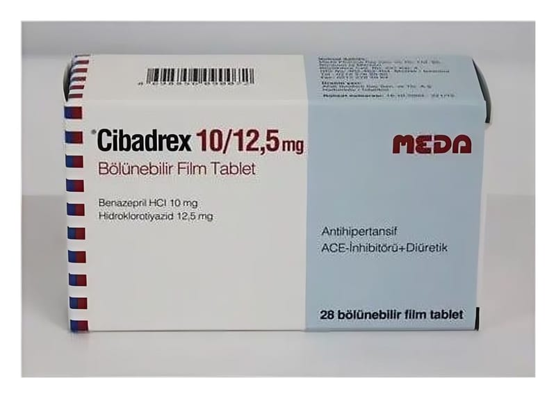

Cibadrex 10/12,5 mg Film Tablet, 28 Adet

Ne için kullanılır
KT · Bölüm 1• CİBADREX, etkin madde olarak benazepril hidroklorür ve hidroklorotiyazid içerir. CİBADREX, alüminyum blister ambalajda, 28 film tablet olarak kullanıma sunulmaktadır. Film tabletler, açık pembe, oval, hafif bikonveks, çentikli ve bölünebilir olup, bir yüzünde R ve D işareti bulunmaktadır. Tablette bulunan çentik, tabletin eşit dozlara bölünmesini sağlar.
Benazepril, anjiotensin dönüştürücü enzim (ADE) inhibitörü adı verilen bir ajandır. Etkisini vücut tarafından üretilen kan basıncının yükselmesine neden olabilecek maddelerin üretimini azaltarak ve kan damarlarını gevşetip genişleterek, böylece kan basıncını düşürerek ve kalpten çıkan kanın akışını artırarak gösterir.
Hidroklorotiyazid, idrar söktürücü (diüretik) bir ilaçtır. Bu madde idrar oluşumunu ve vücuttan atılmasını teşvik ederek etki gösterir ve bu kan basıncında bir düşüşe neden olur.
• CİBADREX, yüksek kan basıncı (hipertansiyon) tedavisinde kullanılır. CİBADREX, daha önce yüksek kan basıncı tedavisi için hem benazepril hem de hidroklorotiyazid tabletleri kullanan veya birden fazla ilaç kullanmak zorunda olan hastalarda kullanılır.